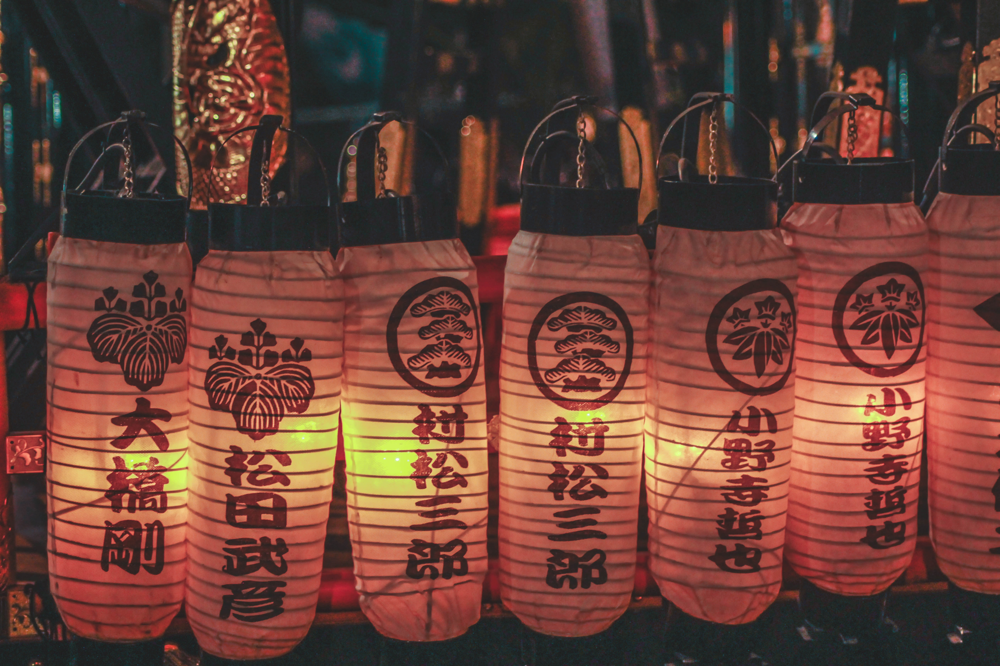
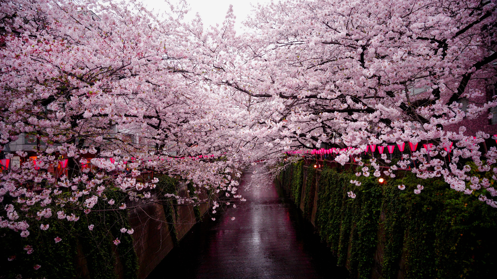

Fuegos Artificales de la bahía
- Fecha: 2do Sabado de Agosto
- Hora: 7:00pm - 12:00am
- Evento Gratuito
A partir de las 7 de la tarde y durante una hora, explotan los colores. Mientras que el índigo del océano se mezcla con el ocre y los azafranes etéreos, los sentidos empiezan a divagar y se escuchan las expresiones de asombro. Odaiba es el centro de las fiestas en la capital. Debajo de la enorme estructura de hierro del Rainbow Bridge, más de diez mil cohetes son lanzados durante esta noche espectacular. Todo un deleite visual, estos fuegos artificiales se ganan a todos los corazones.
Mitama Matsuri
- Fecha: Julio 13 a Julio 18
- Hora: 5:00pm - 8:00pm
- Precio: 12,000 Yenes
El festival Mitama Matsuri en Chiyoda que se realiza en el santuario de Yasukuni, es uno de los máximos festivales de Obon cuyo propósito es honrar a los ancestros. 30.000 faroles de papel brillante bordean el camino hasta el santuario principal, arrojando una luz delicada y cautivante sobre la acera. Desfiles de santuarios portátiles Mikoshi y grupos de música y danza tradicional toman las calles durante cuatro días de celebración. Como es un festival de los muertos, a veces se incluyen casas embrujadas imprevistas.
Chiyoda Cherry Blossom Matsuri
- Fecha: Marzo 21 a Abril 24
- Evento: Gratuito
El sinfín de cerezos a orillas del foso Chidorigafuchi es imprescindible de ver. Unos 260 árboles, principalmente de la famosa variedad Somei Yoshino, florecen a lo largo del paseo de 700 metros de longitud creando un túnel de flores. De noche, los cerezos en flor iluminados y los edificios en el distrito financiero de Marunouchi se complementan de maravilla. Durante el Festival Chiyoda Sakura-matsuri, la zona de remo del Chidorigafuchi abre hasta entrada la noche. Tanto de día como de noche, podrás disfrutar viendo las flores de los cerezos colgando sobre el foso.
The 36th Bunkyo Hydrangea Festival (Ajisai Matsuri)
.jpeg)
- Fecha: Principios de Junio - Mediados de Junio
- Evento: Gratuito
Ubicada en el centro de Tokio, la ciudad de Bunkyo tiene un ambiente encantador y antiguo y es conocida por su rica naturaleza y hermosas flores. Los visitantes y residentes pueden disfrutar de flores de temporada durante todo el año. Bunkyo celebra cinco festivales de flores importantes al año, comenzando con el Festival del Ciruelo en febrero. A principios del verano, más de 3000 hortensias alrededor del santuario Hakusan-jinja y el parque Hakusan florecen, iluminando la ciudad durante la temporada de lluvias de Japón. En el Santuario Hakusan-jinja, el sitio principal del Festival de las Hortensias, varios puestos callejeros que venden hortensias en macetas y otros artículos festivos se alinean en el camino hacia el santuario.
Jindai Botanical Garden Spring Rose Festival

- Fecha: Mediados de Mayo - Finales de Mayo
- Hora: 9:30am - 5:00pm
- Precios: Desde 200 Yenes a 500 Yenes
Es el jardín más grande de Tokio y la región circundante, y ha recibido un Premio a la Excelencia de la Federación Mundial de Sociedades de Rosas (WFRS). Su espectacular jardín de rosas cuenta con aproximadamente 5.200 rosales que representan alrededor de 400 variedades diferentes. En este jardín puede ver una impresionante colección de rosas preciadas, incluida la homónima del jardín, la "Reina de Jindai". También hay una gran colección de plantas y razas de rosas originales que se han cultivado cuidadosamente en el jardín desde su fundación.


..jpg)


.jpg)